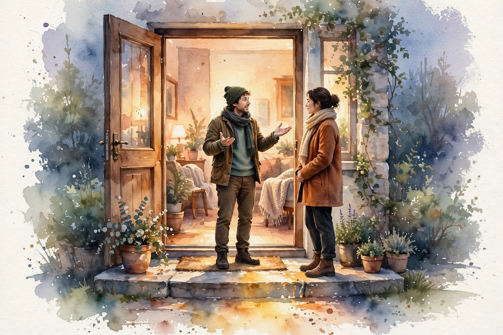

You Are Not So Smart · Episode 080 · Interactive Companion
Deep Canvassing
Dave Fleischer on the doorstep technique that durably reduces prejudice. Twelve thousand conversations, ten converts per hundred, effects lasting months, and the science that survived a fraud.
← Track index · Episode chapter →

Illustration. Watercolor-style image generated for this page. Two figures talk on a lit doorstep. Not a photograph.
The Wisdom Index: every nugget in this companion
Part 1
The Loss That Started It
SOURCEIn 2008, California's Proposition 8 threatened to make same sex marriage illegal. Polls showed voters evenly split. The LGBT community expected to prevail. Then the vote: 52 percent voted against same sex marriage. Shock, fury, humiliation, and one question above all: why did they vote against us?
SOURCEDave Fleischer, who directs the Leadership LAB, the political arm of the Los Angeles LGBT Center, proposed the radical move: go and ask. Recruit a team, knock on the doors of people who voted against them, and find out why. The scale: the Center runs on more than 83 million dollars a year, mostly healthcare. The LAB takes about 1 percent of that, roughly 830,000 dollars a year. The long game, on a shoestring inside a giant.
SOURCEOver the following years the team held more than 12,000 conversations. They recorded them, first audio then video, watched them together, and kept what worked. The technique that emerged was not designed from journals. It was discovered in the field, though it rhymes with the literature: cognitive behavioral therapy in the listening, Arthur Aron's intimacy research in the vulnerability, Robert Cialdini's persuasion principles in the rapport, the Socratic method in the questions.
INTERPRETATIONThe method note for the reader: iterate in the field, not in the library. Twelve thousand recorded attempts beat twelve clever theories. Keep what works. Throw away the rest.
Part 2
The Fraud and the Trial
SOURCEThe first batch of research on the technique produced exciting results. Then David Broockman and Joshua Kalla found fraud in that first batch and helped get it retracted. The episode treats this as science working, not failing: someone checks the exciting study, finds irregularities, and the field starts over.
SOURCEThey started over with a blank slate in Miami. The Los Angeles LGBT Center and SAVE went door to door deep canvassing about transgender rights, with Broockman and Kalla running a proper randomized trial. Half the households got the intervention: the deep canvassing conversation. Half got a placebo: a conversation about recycling. Attitude change was recorded at the door, then tracked with disguised follow up surveys at 3 days, 3 weeks, 6 weeks, and 3 months.
SOURCEThe numbers: a treatment effect of about 0.25 to 0.3 standard deviations on the tolerance scale, sustained across the whole window. Kalla's plain translation: about 10 new supporters for every 100 conversations. On a normal distribution, a quarter standard deviation moves the median person from the 50th percentile to about the 60th. Two properties make it remarkable. Duration: at least 3 months, almost unheard of in persuasion research, where most effects die within days. Resistance: the team showed voters real opposition ads and even argued them the other way, and the treated group stayed more supportive anyway.
Ten minds per hundred doors, for months
Hover any bar for detail. Persuasion effects usually die in days.
Source: Broockman and Kalla trial via the ep080 interviews. Original toy chart built from episode claims. Bar heights show duration only.
SOURCEOne honesty flag from the chapter: trainer Laura Gardner says the change lasts up to 9 months. The trial's published measurement window was 3 months. Three months is the verified figure. Nine months is her characterization. The companion uses the verified figure.
INTERPRETATIONTen per hundred is the measured rate, not a hundred per hundred. Budget for the base rate. At 70 percent of opened doors finishing, 1,000 knocks with half opening means about 350 conversations and about 35 changed minds. The technique is the best tested method available, not a mind control ray.
Nugget
Nothing you say works
What happened. SOURCEThe trainers' first lesson: talking points are impersonal and unpersuasive. Facts bounce off the gut.
Why it matters. INTERPRETATIONIf you polish your points, you do the wrong activity. The voter changes the mind, not you.
The principle. INTERPRETATIONBan talking points in one live disagreement for two weeks. Questions only.
Part 3
Why It Works: The Theory
There is nothing you can say, there is nothing you can tell this person that’s going to change their mind.
The trainers' first lesson for new canvassers, in the episode
SOURCEWhat works is reality over hypotheticals. Do not ask what if you had a transgender child. That is make believe, easy to answer any way you like. Ask what they actually do in a restroom: they go into a stall. Ask about their actual experience noticing people around them. Ground every step in their lived life, and pair any fact with something personal.
SOURCEBroockman and Kalla's account runs through Kahneman's two systems. System 1 is fast, effortless, associative. System 2 is slow, effortful, deliberative. Standard campaigns speak System 1: thirty second ads, mailers, billboards. A mailer can move someone for a day. Deep canvassing forces System 2. The canvasser asks questions the voter must answer, which forces the voter to retrieve memories, examine feelings, and construct sentences. The mental work is the active ingredient.
SOURCEThe hardest mental work has a name: analogic perspective taking. Take an analogy from your own life and apply it to someone else's. After rapport is built, the canvasser asks the voter about times they felt judged, ostracized, or made to feel lesser. The voter's own memory of being on the receiving end becomes the bridge to the out group's experience. Broockman: saying discrimination is wrong now feels different in his body. The abstract fact was always known and always inert. The analogic link makes it felt.
SOURCEMcRaney's closing formula: a person changes their mind only by changing it themselves. The canvasser is a guide, not a persuader. The conversation is cooperative, not competitive: two people teaming up to solve a mystery, with no pressure to agree and nothing to prove.
INTERPRETATIONThe transfer to a technical dispute: do not open with benchmarks or docs. Open with curiosity about their lived experience: the outage that scarred them, the migration that burned them. Let them talk themselves through what that experience implies. Cooperative mystery solving, not a debate to win.
Nugget
System 2 does the lasting work
What happened. SOURCEQuestions force voters to retrieve, examine, and construct. Effortful processing predicts durable change. Passive exposure predicts nothing durable.
Why it matters. INTERPRETATIONThe same script read rushed does nothing. With questions that demand answers, it moves turnout.
The principle. INTERPRETATIONMake them do the mental work. Effort is the active ingredient.
Nugget
Analogic perspective taking
What happened. SOURCEThe voter's own memory of being judged becomes the bridge to the out group's experience. The voter builds it.
Why it matters. INTERPRETATIONA handed analogy is another talking point. Borrowed bridges do not hold weight.
The principle. INTERPRETATIONAsk about their experience. Never name the analogy. Let them build it.
Part 4
The Technique in Practice
SOURCEThe doorstep numbers: conditional on someone opening the door, about 70 percent finish the conversation. Seventy percent, for a stranger at the door wanting to talk about prejudice. The trainers credit radical hospitality: from the minute volunteers arrive Saturday morning, they are treated as honored guests, and they extend the same to the voter. Active listening, shared stories, rapport first, always.
SOURCEThe training itself runs about 1.5 hours, volunteers in small pods with a veteran leader, breaking into mock conversations at each step, alternating roles as canvasser and voter. McRaney, who attended three sessions, reports finding himself exploring vulnerable parts of his own life in the role plays. The method trains the trainer too.
SOURCEBroockman's honesty about the science: the team does not know exactly why it works. His analogy: 2,500 years ago, chewing a certain tree bark cured headaches. Later the active ingredient was distilled as aspirin. Deep canvassing is at the tree bark stage. The effect is real. The active ingredient is not isolated. Which levers matter most is the next research program.
SOURCEMcRaney closes the loop to episode 2 deliberately, replaying Lee Ross's line: in 40 years of conflict work, Ross never met anyone who wanted to meet the other side to be corrected. Deep canvassing never asks for that. It asks voters to remember their own experience of being judged, and lets the analogy do the rest.
INTERPRETATIONThe honest limit, stated plainly: the tree bark stage means no overclaiming. The effect is real, the ingredient unknown. Knowing the stage prevents both dismissal and hype.
Nugget
The tree-bark stage
What happened. SOURCEThe technique is a kitchen sink: active processing, perspective taking, stories, rapport. The active ingredient is not isolated.
Why it matters. INTERPRETATIONReal effect plus unknown mechanism demands humility in both directions.
The principle. INTERPRETATIONUse the best tested method. Do not sell it as a solved science.